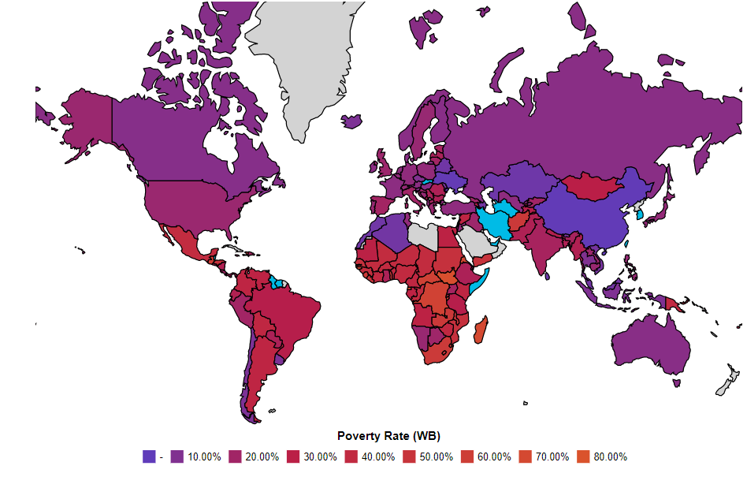

Poverty reduction, often known as poverty relief or alleviation, refers to a collection of economic and humanitarian initiatives aimed at permanently lifting people out of poverty
Annual Reports Of Poverty Reduction

This Poverty Reduction Progress Report is the seventh in a series of yearly reports delivered by the World Bank's management to
its Board of Executive Directors to update them on progress made in decreasing poverty and increasing the poverty focus and impact of Bank activities.
The paper was created by the Reduction and Economic Management Network's Poverty Reduction Group (PREM).It is the result of extensive consultations with staff from other Bank groups and networks, as well as conversations with the Board's Development Effectiveness Committee and the entire Board of Executive Directors.